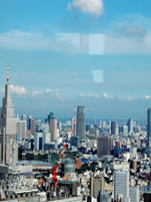

หอสังเกตการณ์ที่ตั้งอยู่บนชั้นบนสุดของรัฐบาลโตเกียวเมโทรโพลิแทน ในสภาพอากาศที่ดีคุณสามารถเพลิดเพลินกับมุมมองกลางคืนและแสงพระอาทิตย์ขึ้นภูเขาฟูจิจากห้องสังเกตการณ์เหนือ Odaiba และ Roppongi Hills และ Tokyo Sky Tree ®เมืองเช่นกรุงโตเกียวในระยะทางจากห้องสังเกตการณ์ใต้ ห้องแนวโน้มคาเฟ่ใต้ (คาเฟ่สมัครโดยตรง) นอกจากนี้คุณยังสามารถเช่าเหมาลำของ บริษัท เอกชน วิธีการเล่นโตเกียวใหม่ที่คุณจะได้พบกับ ※สังเกตดาดฟ้าเหนือเป็นครั้งแรกวันหยุด 2.4 เดือนแรก 1.3 Hikyuu (ทั้ง Hiraki-Shitsu ในกรณีที่เป็นวันหยุดราชการวันหยุดวันถัดไป) นอกจากเสาร์ที่สามของเดือนตุลาคมในช่วงปลายปีและวันหยุดปีใหม่ห้องมุมมองใต้ (12 29-31 เดือน 02-03 มกราคม) เมโทรโพลิแทนรัฐบาลอุปกรณ์ไฟฟ้าหยุดการตรวจสอบวันที่สร้าง
